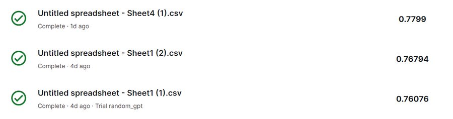

Joined IIT Madras and engaged in various impactful projects and
initiatives.
Current Curiosities
What are the careers that give people easy headstart but also growth potential, can we even scale them
How does convergence to an answer works, will we ever reach it using LLMs
If we all live 200+ years, will the marriage, education and career look the same. Does it impact massively how we live 0-80 then vs now.
Building the Best AI-Butler
I am building something which I use myself and want to use even more.
Open Source and AI Research
Titanic Dataset Prediction with GPT-4 (2024)
We recently tackled the famous Titanic Dataset prediction task using GPT-4, achieving impressive results
with 78% accuracy. Our approach involved providing the model with survival rate statistics based on
parameters such as age, class, and gender. Initially, fare emerged as a key predictor, but the model also
identified a combination of age and class as important factors.
Significant Findings:
Fare and class combined played a crucial role in survival prediction.
The model was able to suggest new factors based on the input data, improving prediction accuracy.
However, the model struggled to prioritize facts, such as the higher impact of gender over fare.
The highest accuracy achieved was 77.99%, but we identified opportunities for further improvement. We
believe Direct Preference Optimization (DPO) could help train the model to better prioritize certain
factors and increase the accuracy beyond 80%.

Solving Tic-Tac-Toe with Reinforcement Learning & Open Source Contribution
Another exciting project involved solving Tic-Tac-Toe using reinforcement learning for large language
models (LLMs). This experiment opened up possibilities for scaling training data and improving LLMs'
decision-making capabilities. In collaboration with a friend, I also contributed to open source by building
a massive dataset inspired by VQGAN models, which has been helpful for freelance AI research projects.
Algorithmic Trading & Hedge Fund Experience
Developed a crypto options trading algorithm (Jan - Jul 2023)
I wanted to build an algorithm for prediction markets. I started with cricket but quickly shifted to
crypto
since time arbitrage and fixing weren't prevalent in small-sized crypto options and on the exchange. The
primary
goal was to develop an algorithm that could trade better than humans. When we began, I had no idea how
Python
worked, but early ChatGPT assistance was invaluable.
Significant challenges at the start:
Options time duration was 20 minutes, and they were binary.
Research in this space, especially in crypto, was negligible, providing no solid foundation to
begin.
High unpredictability of the crypto market – pretty obvious challenge.
I dove in headfirst, spending significant time analyzing data and talking to traders. True realization
began
when I started manually reading the data. After working with it for so long, I gained a rough
understanding of
what the price of an option should be, and when it didn’t match, I looked for reasons. It was a hellish
three
months of figuring things out, especially with no mentorship on how to build something like this or if
it was
even possible. But with strong encouragement from mentors to just keep trying, I managed to create the
algorithm. It wasn’t perfect, but it performed exceptionally well under certain conditions.
Good conditions for the algorithm:
When the market was highly unpredictable but not in a pump-and-dump cycle
When the market wasn’t racing up or down
The algorithm was based on random motion, which I later realized was a foundation of the Black-Scholes
equation
too. I applied a 1D analogy instead of a 2D one. Sometimes, it worked so well that we made 10x returns
in an
hour from our base capital.
Why didn’t I continue?
Crypto volumes in the real market dried up: When this happens, the market stays stable for long
periods, and
theta decay becomes the primary way to make money. I had no idea what theta was at that time.
The exchange we were working with was reconsidering allowing algorithms due to legal considerations.
A minor factor was the uncertainty surrounding government taxation on high-frequency trading (HFT)
in these
spaces.
Built a massive simulation for testing trading strategies at a hedge fund (Aug 2023 - Jan
2024)
At the hedge fund, I wasn’t as satisfied with my performance as I usually am. Building a massive
simulation
capable of testing 1 million different trading strategies with limited GPU usage and time was a
significant
achievement. Each iteration improved, but I never felt it was good enough for the time I spent on it.
However,
two positive things came out of the experience: I regained trust in my mathematical skills, and I
realized that
more than money, what really matters to me is making an impact and solving people’s problems.
Dropping Out of college
I think for me completing college degree was never the goal, it was always what I get from being in
college, and there
were few things friends, alumni connections, placement, access to top labs. Post COVID, I was already
connected with
friends really well online and was in Bangalore building company with my other friends. Alumni
connections got really
strong while writing the book, it genuinely helped me connect with people I could have not even think
of. Placement,
because of being active in startup space, I was getting opportunities to work already so it didn't felt
like big gain.
Yes, access to top labs is something I missed, but back then I thought I'll mostly not code or go in
research side
(Life is fun when you let it flow).
Published 'The IITM Nexus'
Well, I with my team at "Insti" used to write books on college entrepreneurs. We loved doing that, it
was fun sharing small wins of people and few became really successful in them. We used to share them on
LinkedIn, one
day and alumni pinged asking if we will be interested in writing a book on IIT Madras Alumni (My college), who
have
already successful companies. It felt interesting so I jumped in, and what a roller coaster journey it was. It
pushed me
from being fully non tech to tech, to asking tough questions from mental pressure, relationship management,
closing of a
company and long-short run thoughts. It's focus was to try to see them through the lens of college students and
make
it as relatable it can get. It was beautiful ❤️.
Founded Insti
This project happened when I felt I needed a break in life and give time to living small moments
of
Campus.
There was a successful campus confession page whose admin I used to talk with. Just as a joke, we
thought, what
if we ran ads on it by getting sponsors? We got our first money. Slowly, the admin wanted to focus
on study, and
instead of closing the page, I proposed taking it over. What a journey it was! Initially, I got
involved a lot
in campus-related things, which pushed the page's growth. But as soon as COVID started, we began
expanding,
hiring people from other colleges, launching more pages, and increasing content quality. I loved
building it
with a great team and even launched several sub-companies.
Why I stopped it?
It was taxing to manage a constantly changing team of interns, with new people joining and
leaving every
semester.
Financially, it wasn’t very sustainable. The money that felt big in 2nd year felt small in 3rd
year as
ambitions grew.
Joined IIT Madras
Memorable experiences at IIT Madras
1. A surprise presentation moment: I was tasked with presenting about a scientist
and their
discovery.
Unexpectedly, the scientist I was presenting on showed up in person to explain the topic! It was a
total
surprise, and no one saw it coming.
2. Selling T-shirts to proud parents: While most T-shirts on campus are sold to
students,
we realized the immense pride parents feel when their children get admitted. So, we sold 300
T-shirts to them in
under 30 hours,
making a profit of INR 28,000 ($350). It was amazing to identify the value proposition and execute
the idea even
without a flashy design.
3. Working on "Is Insti really safe?": I ran an Instagram series highlighting real
stories of
harassment faced by women on campus.
This raised substantial awareness and led to the implementation of several initiatives aimed at
improving
safety. It was eye-opening and inspiring to witness the impact.